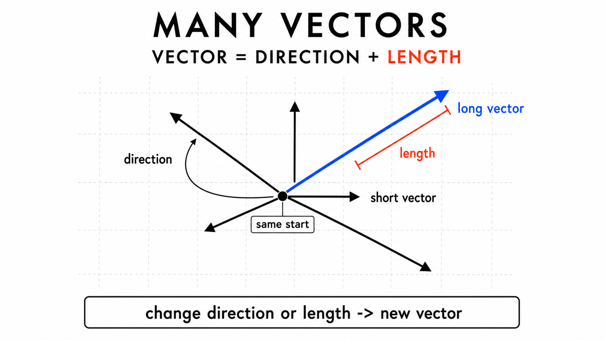
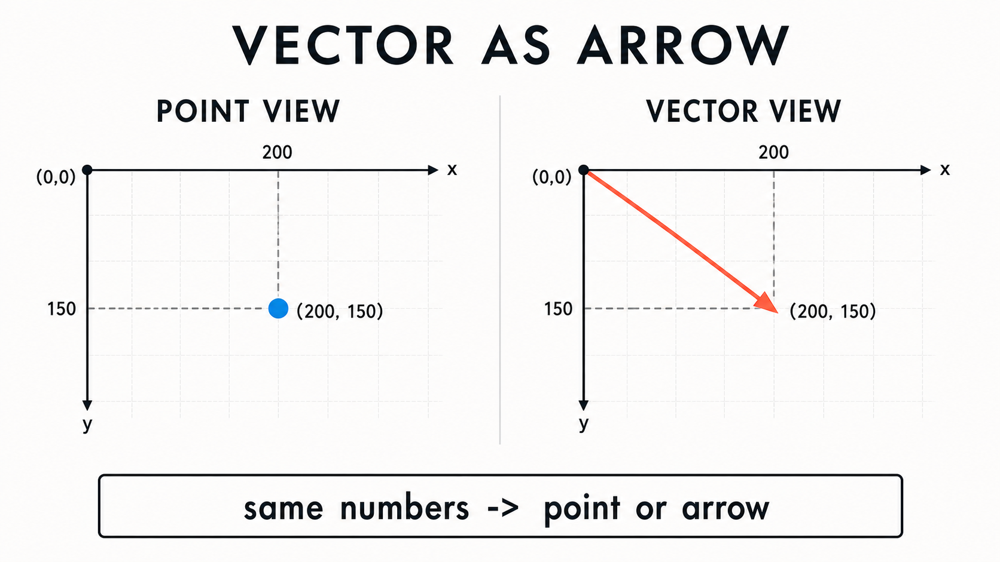
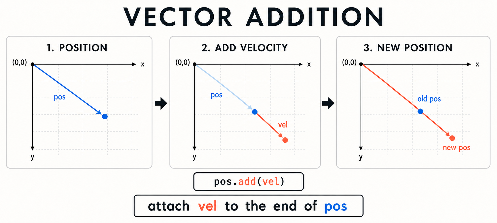
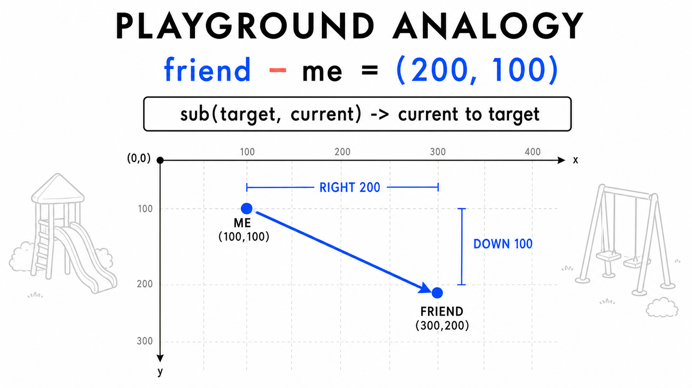
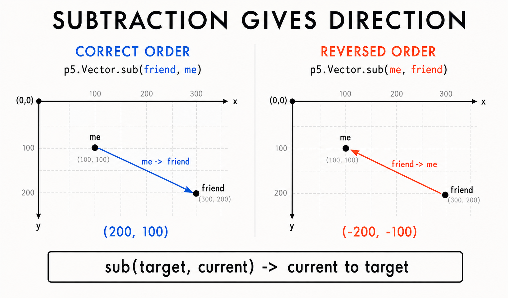
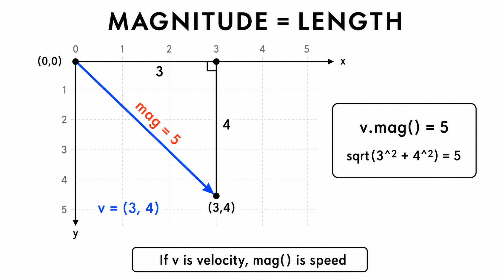
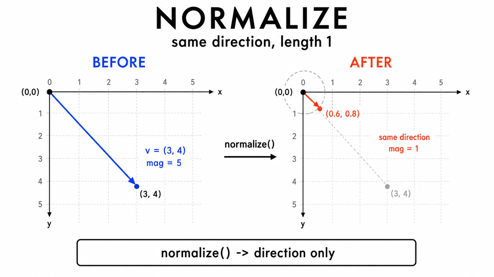

9주차 1교시 — 벡터란 무엇인가 + p5.Vector 기본
강의 아웃라인: week-09-outline 다음 교시: week-09-period2-student (가속도, 삼각함수, 클래스 결합)
| 항목 | 내용 |
|---|---|
| 대상 | p5.js 입문자 (테크아트 전공) |
| 소요 시간 | 45분 |
| 핵심 도구 | p5.js Web Editor |
- ✅ 벡터(Vector)의 개념을 이해하고, 왜 x/y 변수 대신 벡터를 사용하는지 설명할 수 있습니다
- ✅
createVector()와p5.Vector클래스를 사용하여 위치와 속도를 벡터로 표현할 수 있습니다 - ✅ 벡터 연산(
add(),sub(),mult(),normalize(),dist())의 의미를 이해하고 활용할 수 있습니다
이번 시간 핵심
- 5주차 바운싱 볼에서는 위치
x, y와 속도speedX, speedY를 따로 관리했습니다. - 벡터는
x, y를 한 묶음으로 다루어 위치, 속도, 가속도를 표현합니다. - 벡터는 이후 힘, 파티클, 시뮬레이션을 구현하는 기본 도구입니다.
let x = 200, y = 200;
let speedX = 3, speedY = 2;
function setup() {
createCanvas(400, 400);
}
function draw() {
background(220);
ellipse(x, y, 30);
x += speedX;
y += speedY;
if (x > width || x < 0) speedX *= -1;
if (y > height || y < 0) speedY *= -1;
}위 코드의 변수 4개는 벡터 2개로 묶을 수 있습니다.
| 5주차 변수 | 9주차 벡터 | 의미 |
|---|---|---|
x, y |
pos |
위치 |
speedX, speedY |
vel |
속도 |
💡 핵심 개념 1 — 벡터란? 화살표로 시작하자
Step 1. 벡터 = 방향과 길이를 가진 화살표
벡터는 방향과 길이를 가진 값입니다. 처음에는 화살표로 이해하면 가장 직관적입니다.
화살표 하나에는 두 가지 정보가 들어있습니다.
| 화살표의 정보 | 벡터에서의 이름 |
|---|---|
| 어디를 가리키는가 | 방향 |
| 얼마나 긴가 | 길이 |
벡터의 길이는 영어 자료에서 magnitude라고 부릅니다.
짧은 화살표, 긴 화살표, 오른쪽으로 뻗은 화살표, 왼쪽 대각선으로 뻗은 화살표는 모두 서로 다른 벡터입니다. 방향이나 길이가 다르면 다른 벡터로 봅니다.

Step 2. 스칼라 vs 벡터 — 일상 예시로 구분
| 일상 예시 | 어떻게 말하는가 | 분류 |
|---|---|---|
| 오늘 기온 | “23도” | 스칼라 — 숫자 하나로 표현 |
| 내 키 | “175cm” | 스칼라 |
| 바람 | “북서쪽으로 4m/s” | 벡터 — 방향 + 세기 |
| 공의 속도 | “오른쪽 위로 5m/s” | 벡터 |
- 스칼라: 숫자 하나로 충분한 값
- 벡터: 방향과 길이가 함께 필요한 값
- p5.js 움직임에서 위치, 속도, 가속도는 모두 벡터로 다룰 수 있습니다.
Step 3. 좌표평면 위의 벡터 — 두 개의 숫자가 화살표를 만든다
캔버스의 좌상단이 (0, 0)이고, 오른쪽으로 갈수록 x가 커지고, 아래로 갈수록 y가 커집니다.
위치 (200, 150)은 캔버스의 한 지점이면서, 원점
(0, 0)에서 그 지점까지 가는 화살표로도 볼 수 있습니다.

두 개의 숫자 (x, y) = 화살표 하나 = 벡터 하나.
| 벡터 | 의미 |
|---|---|
(3, 0) |
오른쪽으로 3 |
(0, 4) |
아래로 4 |
(3, 4) |
오른쪽 3, 아래 4 |
Step 4. 프로그래밍에서의 벡터
프로그래밍에서 벡터는 (x, y) 두 값을 한 묶음으로 다루는 것입니다.
| 변수 2개 (5주차 방식) | 벡터 1개 (9주차 방식) | 의미 (화살표 해석) |
|---|---|---|
x = 200, y = 150 |
pos = (200, 150) |
위치: 원점에서 (200, 150)까지 가는 화살표 |
speedX = 3, speedY = -2 |
vel = (3, -2) |
속도: 매 프레임 오른쪽 3, 위 2만큼 이동시키는 화살표 |
위치 벡터는 ’어디에 있는가’를 원점으로부터의 화살표로 표현하고, 속도 벡터는 ’매 프레임 어느 방향으로 얼마나 이동하는가’를 나타내는 화살표입니다.
7주차 클래스 안에서 x, y,
speedX, speedY 대신 pos,
vel 같은 벡터를 사용할 수 있습니다.
5주차 바운싱 볼에서
x = 200, y = 200, speedX = 3, speedY = 2 — 이 4개 변수를
벡터로 묶으면 몇 개의 벡터가 필요할까요?
답: 2개. 위치 벡터 (200, 200)과 속도 벡터 (3, 2)입니다.
💡 핵심 개념 2 — createVector()와 p5.Vector
p5.Vector — p5.js가 미리 만들어준 클래스
p5.js에는 벡터를 위한 p5.Vector 클래스가 이미 준비되어
있습니다.
createVector(x, y) —
벡터 생성
let pos = createVector(200, 150);
console.log(pos.x); // 200
console.log(pos.y); // 150createVector(200, 150)은 x가 200, y가 150인 벡터를
만듭니다. 값은 pos.x, pos.y로 접근합니다.
5주차 코드를 벡터로 변환
// 5주차 방식 (변수 4개)
let x = 200, y = 200;
let speedX = 3, speedY = 2;
// 9주차 방식 (벡터 2개)
let pos = createVector(200, 200);
let vel = createVector(3, 2);변수 4개가 벡터 2개로 줄었습니다. pos는 위치(position),
vel은 속도(velocity)라서 이름만 봐도 역할을 바로 알 수
있습니다.
관례적인 이름
| 영어 | 약자 | 한국어 |
|---|---|---|
| position | pos |
위치 |
| velocity | vel |
속도 |
| acceleration | acc |
가속도 |
pos는 위치, vel은 속도, acc는
가속도를 뜻합니다.
💡 핵심 개념 3 — 벡터 연산: add(), sub(), dist()
5주차 방식 vs 벡터 방식
// 5주차: 줄이 2개 필요
x += speedX;
y += speedY;// 9주차: 한 줄로 표현
pos.add(vel);pos.add(vel)은 위치에 속도를 더한다는
뜻입니다. 내부적으로는 pos.x += vel.x; pos.y += vel.y;를
수행합니다.
전체 코드로 확인
let pos, vel;
function setup() {
createCanvas(400, 400);
pos = createVector(200, 200);
vel = createVector(3, 2);
}
function draw() {
background(220);
pos.add(vel); // x += speedX; y += speedY;를 한 줄로!
ellipse(pos.x, pos.y, 30);
}실행 결과: - 원이 오른쪽 아래 방향으로 이동 (화면 밖으로 나감 — 바운싱은 아직 없음)
벡터 덧셈의 시각적 이해
벡터 덧셈 = 화살표 두 개를 이어붙이기.

위치 화살표의 끝에 속도 화살표를 붙이면 그 끝점이 새로운 위치가 됩니다.
숫자로 확인: 위치 (200, 200) + 속도 (3, 2) = (203, 202).
sub() — 벡터
뺄셈으로 방향 구하기
뺄셈은 두 점 사이의 방향을 구하는 연산입니다.
왜 ’뺄셈 = 방향’인가? — 놀이터 비유
내 위치가 (100, 100)이고, 목표 위치가 (300, 200)이라고 가정합니다.

목표 x - 현재 x = 300 - 100 = 200
목표 y - 현재 y = 200 - 100 = 100
→ (200, 100) : 현재에서 목표로 가는 이동 벡터같은 숫자라도 pos = createVector(200, 100)이면 화면의
위치를 뜻합니다.
하지만 toFriend = p5.Vector.sub(friend, me)의 결과가
(200, 100)이라면, 이것은 오른쪽으로 200, 아래로
100만큼 이동하라는 방향/이동량입니다.
이 화살표를 원점에 놓으면 (0, 0)에서 (200, 100)으로 가고, 내 위치 (100, 100)에 붙이면 (100, 100)에서 (300, 200)으로 갑니다. 벡터는 방향과 길이가 같으면 어디에 옮겨 놓아도 같은 벡터로 볼 수 있습니다.
목표 위치 - 현재 위치 = 현재에서 목표로 가는 화살표
코드로 확인
let me = createVector(100, 100);
let friend = createVector(300, 200);
let toFriend = p5.Vector.sub(friend, me);
console.log(toFriend.x, toFriend.y); // 200, 100p5.Vector.sub(friend, me) = 친구 위치 - 내
위치 = 나에서 친구로 가는 화살표.
순서가 반대면? — 가장 흔한 실수
let wrong = p5.Vector.sub(me, friend);
console.log(wrong.x, wrong.y); // -200, -100결과가 (-200, -100)으로 부호가 다 뒤집혔습니다. 이건 친구에서 나로 오는 화살표라서 내가 원하던 것과 반대 방향입니다.

sub(도착, 출발). 도착을 앞에 둡니다.
내가 가고 싶은 쪽을 첫 번째 인자로 사용합니다.
실전: 마우스 추적 미니 예제
let pos;
function setup() {
createCanvas(400, 400);
pos = createVector(200, 200);
}
function draw() {
background(220);
let mousePos = createVector(mouseX, mouseY);
let dir = p5.Vector.sub(mousePos, pos); // ① 공 → 마우스 방향 (뺄셈)
dir.mult(0.05); // ② 이동량이 너무 크지 않도록 5%만 사용
pos.add(dir); // ③ 그만큼 이동 (덧셈)
ellipse(pos.x, pos.y, 30);
}연산 3개가 연결됩니다: 뺄셈(방향 구하기) → 곱셈(속도 조절) → 덧셈(이동).
멀면 dir 벡터가 길고(거리가 크니까), 가까워지면
짧아집니다. 그래서 mult(0.05)한 이동 거리도 함께
줄어듭니다. 거리 계산이나 조건문을 따로 쓰지 않아도 자연스러운
감속 효과가 생깁니다.
방향 벡터의 길이 = 거리
let toFriend = p5.Vector.sub(friend, me); // (200, 100)
console.log(toFriend.mag()); // √(200² + 100²) ≈ 223.6방향 벡터의 길이(mag())는 두 점 사이의 직선
거리입니다.
sub() 한 줄 요약
| 원하는 것 | 코드 | 의미 |
|---|---|---|
| A에서 B로 가는 화살표 | p5.Vector.sub(B, A) |
“도착 - 출발” |
| A와 B 사이 거리 | p5.Vector.sub(B, A).mag() 또는
A.dist(B) |
화살표 길이 |
| 방향만 (순수 방향) | sub 후 normalize() |
길이 1 화살표 |
공이 (50, 50)에 있고, 마우스가 (200, 150)에 있습니다. 공에서 마우스로 가는 방향 벡터는?
답: sub(mouse, pos) = (200-50, 150-50)
= (150, 100)입니다.
dist() — 두 벡터 사이의
거리
let a = createVector(100, 100);
let b = createVector(400, 500);
console.log(p5.Vector.dist(a, b)); // 500
console.log(a.dist(b)); // 500 (같은 결과)dist()는 두 벡터 사이의 거리만 필요할 때 사용합니다.
충돌 감지나 중력 계산에서 자주 쓰입니다.
💡 핵심 개념 4 — mult()와 normalize()
mult(n) — 벡터에 숫자를
곱하기
벡터에 숫자를 곱하면 크기가 바뀌고 방향은 유지됩니다.
let v = createVector(3, 4);
v.mult(2); // (6, 8) — 크기가 두 배가 됨let v = createVector(3, 4);
v.mult(0.5); // (1.5, 2) — 크기가 절반이 됨let v = createVector(3, 4);
v.mult(-1); // (-3, -4) — 방향 반전vel.mult(-1)은 x, y 방향을 모두 반대로 뒤집습니다.
5주차 바운싱 코드 vs 벡터 바운싱 코드
| 5주차 | 9주차 (벡터) |
|---|---|
speedX *= -1; |
vel.x *= -1; |
speedY *= -1; |
vel.y *= -1; |
벽에 부딪힐 때는 vel.x *= -1 또는
vel.y *= -1처럼 한 축만 바꿉니다.
vel.mult(-1)은 양쪽을 모두 뒤집습니다.
mag() — 벡터의
길이(빠르기) 구하기
화살표의 길이를 알고 싶을 때 mag()를
씁니다.
let v = createVector(3, 4);
console.log(v.mag()); // 5
오른쪽 3칸, 아래 4칸이면 직각삼각형이고, 빗변이 화살표의 길이입니다.
실제 계산은 v.mag()가 처리합니다.
mag() = 화살표 길이 = 속도 벡터라면
‘빠르기’. 속도 벡터의 mag()가 크면 빠르고, 작으면
느린 것입니다.
normalize()
— 크기를 1로 만들기 (“방향만 남기기”)
normalize()는 방향은 그대로 두고 길이만 1로
줄이는 것입니다.
let v = createVector(3, 4); // 길이 5짜리 화살표
v.normalize(); // 같은 방향, 길이만 1
console.log(v.mag()); // 1직관적 계산: (3, 4)는 길이가 5이므로 각 숫자를 5로 나누면 (0.6, 0.8)이 됩니다.

길이가 1인 벡터를 단위 벡터(unit vector)라고 합니다.
let v = createVector(3, 4);
v.normalize(); // 방향만 남기기 (길이 = 1)
v.mult(5); // 원하는 속도로 설정 (길이 = 5)normalize() →
mult(원하는속도): 방향은 유지하고 속도만 원하는
값으로 맞추는 패턴.
실습 예시
예시 1: 5주차 코드 → 벡터 코드 리팩토링
리팩토링 순서: 1. let x = 200, y = 200;
→ let pos = createVector(200, 200); 2.
let speedX = 3, speedY = 2; →
let vel = createVector(3, 2); 3.
x += speedX; y += speedY; → pos.add(vel); 4.
ellipse(x, y, 30) → ellipse(pos.x, pos.y, 30)
5. if (x > width || x < 0) speedX *= -1; →
if (pos.x > width || pos.x < 0) vel.x *= -1; 6.
if (y > height || y < 0) speedY *= -1; →
if (pos.y > height || pos.y < 0) vel.y *= -1;
변환 완료 코드:
let pos, vel;
function setup() {
createCanvas(400, 400);
pos = createVector(200, 200);
vel = createVector(3, 2);
}
function draw() {
background(220);
pos.add(vel);
if (pos.x > width || pos.x < 0) vel.x *= -1;
if (pos.y > height || pos.y < 0) vel.y *= -1;
ellipse(pos.x, pos.y, 30);
}동작은 동일하지만, 변수가 4개에서 2개로 줄고
x += speedX; y += speedY;가 pos.add(vel) 한
줄이 되었습니다.
예시 2: 속도 증가
function draw() {
background(220);
vel.mult(1.005); // 매 프레임 속도가 0.5%씩 증가
pos.add(vel);
if (pos.x > width || pos.x < 0) vel.x *= -1;
if (pos.y > height || pos.y < 0) vel.y *= -1;
ellipse(pos.x, pos.y, 30);
}vel.mult(1.005)를 쓰면 매 프레임 속도가 0.5%씩
증가합니다. 이 예시는 속도가 계속 커지는 효과를 보여 주기 위한 간단한
방법입니다. 가속도를 별도 벡터로 다루는 방식은 2교시에서 구현합니다.
예시 3: normalize() +
mult() 활용
let pos, vel;
function setup() {
createCanvas(400, 400);
pos = createVector(200, 200);
vel = createVector(3, 7);
vel.normalize(); // 방향만 남기기
vel.mult(4); // 속도 4로 통일
}
function draw() {
background(220);
pos.add(vel);
if (pos.x > width || pos.x < 0) vel.x *= -1;
if (pos.y > height || pos.y < 0) vel.y *= -1;
ellipse(pos.x, pos.y, 30);
}(3, 7) 방향으로 가되 속도는 4로 맞추는 normalize() →
mult(4) 패턴입니다. 방향과 속도를 따로
제어할 수 있습니다.
🏆 정리
핵심 요약
| 개념 | 핵심 | 코드 |
|---|---|---|
| 벡터 | x, y를 하나로 묶은 것 | createVector(x, y) |
| 벡터 접근 | 점(.) 표기법 |
pos.x, pos.y |
| 덧셈/뺄셈 | 위치 + 속도 = 이동 | pos.add(vel), p5.Vector.sub(a, b) |
| 거리 | 두 벡터 사이의 거리 | p5.Vector.dist(a, b), a.dist(b) |
| 스칼라 곱 | 크기 변경, 방향 유지 | vel.mult(2), vel.mult(-1) |
| 길이 | 벡터의 빠르기(크기) | vel.mag() |
| 정규화 | 크기를 1로 (방향만 유지) | vel.normalize() |
벡터 = x, y 묶음. pos.add(vel) =
움직임.